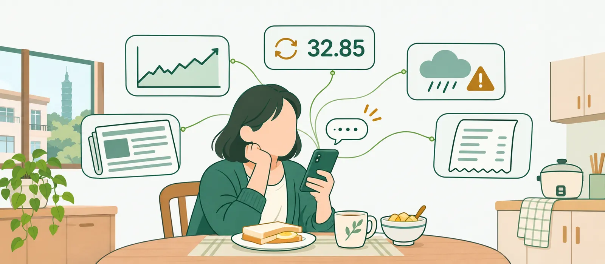

28 天 AI 入門
給 AI 新手的 28 天課表：從把 AI 當 Google 用、整理資料，到用 AI 寫小程式和自動化。
- 四個階段，由淺入深
- 不會寫程式也能上寫程式分 4 條路線，免費網頁版走得完
- 每天有驗收清單做完就知道學會沒
第 1–3 天必上，其他照需要挑；★ 是時間不夠時的最低完成路線。
第 1 階段・當 Google 用

第 2 階段・整理與分析
第 2 階段・技能
第 2 階段・Vibe Coding
第 3 階段・代理與排程
第 4 階段・主動式 AI
回顧
後續進階課程

n8n 生活自動化自動化就是「設定一次，之後照規則自己跑」。第 26 天用 GitHub Actions 每天抓匯率；n8n 用拖拉方塊的方式把多個服務串起來，大多不用寫程式。這門課用它做每天早上自動送到手機的生活早報。AI Agent 開發中讓 AI 自己規劃步驟、使用工具完成任務。